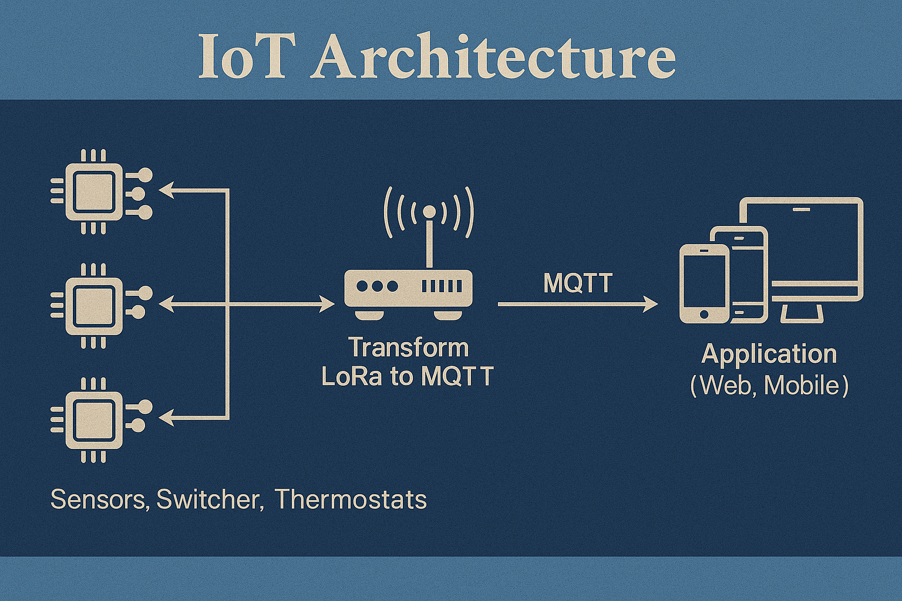

IoT Architecture
IoT architecture refers to the layered structure that defines how IoT systems are built and operate. It includes devices, communication networks, cloud infrastructure, and user interfaces that collectively enable data collection, transmission, processing, and interaction.
Overview of IoT Architecture Layers
IoT systems are typically structured into four main layers, each responsible for a specific function in the data lifecycle:
- Device Layer: This includes physical objects equipped with sensors, actuators, and microcontrollers. Devices collect data from their environment or perform actions in response to commands.
- Network Layer: This layer handles the communication between devices and backend systems. It supports data transmission using various wired or wireless communication protocols.
- Cloud Layer: Data collected from devices is transmitted to cloud platforms where it is stored, processed, and analyzed. The cloud also supports large-scale data management, application logic, and integration with other services.
- User Interface (UI) Layer: This provides dashboards, mobile apps, or web portals that allow users to interact with the IoT system, monitor performance, and configure devices.
IoT Communication Protocols
IoT devices use a variety of communication protocols depending on the requirements for range, power consumption, and data throughput. Common protocols include:
- Wi-Fi: Suitable for high data throughput and easy integration with existing networks. It consumes more power and is ideal for applications where constant power is available.
- Zigbee: A low-power, low-data-rate wireless protocol used for short-range communication in mesh networks. Common in home automation and sensor networks.
- MQTT (Message Queuing Telemetry Transport): A lightweight messaging protocol ideal for low-bandwidth, high-latency networks. It enables reliable communication between devices and the cloud using a publish-subscribe model.
Protocol Comparison Table
| Protocol | Range | Power Consumption | Use Case |
|---|---|---|---|
| Wi-Fi | High (100m+) | High | Smart appliances |
| Zigbee | Medium (10–100m) | Low | Smart lighting, sensors |
| MQTT | Variable (network dependent) | Low | Cloud messaging, IoT telemetry |
To learn how to connect IoT devices specifically using Wi-Fi, refer to: Connecting Devices via Wi-Fi.